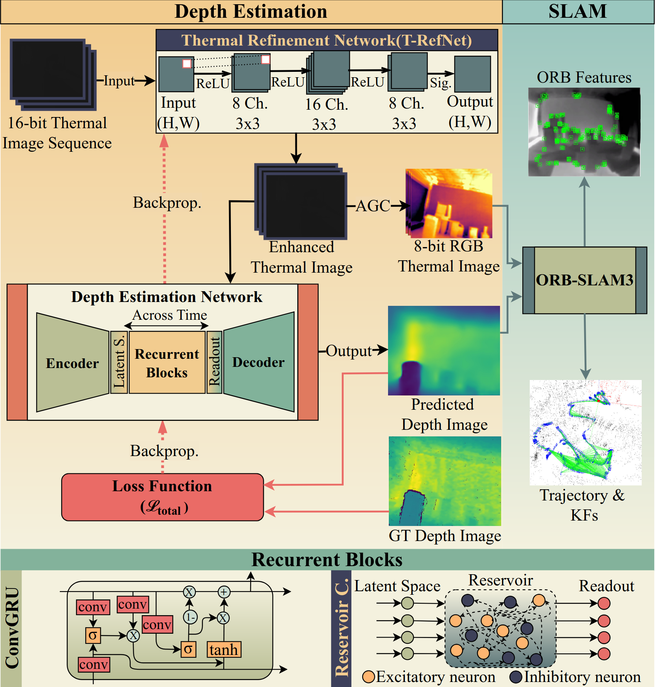

Thermal Image Refinement with Depth Estimation
using Recurrent Networks for Monocular ORB-SLAM3
Abstract
We propose a lightweight thermal-to-depth estimation framework for robust UAV localization in GPS-denied and low-light environments. A thermal refinement network (T-RefNet) enhances 16-bit thermal inputs, followed by recurrent modeling (ConvGRU or Reservoir Computing) to enforce temporal consistency. The predicted depth maps are integrated into ORB-SLAM3, enabling thermal-only SLAM with metric scale recovery. Experiments on both radiometric (VIVID++) and non-radiometric datasets demonstrate state-of-the-art depth accuracy and sub-0.4 m trajectory error in UAV experiments.

Method Overview
Overview of the proposed thermal depth estimation pipeline. A raw 16-bit long-wave infrared (LWIR) image is first refined and normalized by the T-RefNet module, producing both a normalized input for depth predic- tion and a color-mapped image for robust ORB-SLAM3 feature extraction. The encoder backbone extracts multi-scale features, which are processed by recurrent blocks (ConvGRU [9] or reservoir computing (RC) [10]) to enforce temporal consistency. Finally, the decoder outputs dense depth maps that provide metric scale and temporally consistent depth priors to ORB- SLAM3, enabling improved initialization, mapping accuracy, and real-time tracking performance
Depth Estimation Results
Results for Vivid++

Results for our dataset

BibTeX
..... }